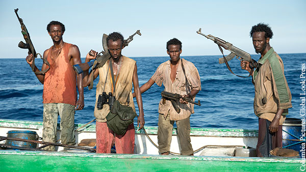

Раздел 1: Происхождение сомалийского пиратства
Сомалийское пиратство начало развиваться в 1990-х годах, после распада центральной власти в Сомали. В условиях анархии, местные рыбаки начали нападать на иностранные суда, считая это единственным способом выживания.
- 1991: Начало распада Сомали
- 1995: Первые нападения на иностранные суда
- 2000: Увеличение числа атак
Пираты использовали старые рыболовные лодки для своих операций, что позволяло им оставаться незамеченными.
Раздел 2: Развитие пиратства
С течением времени, сомалийские пираты начали применять более сложные тактики. Они стали использовать скоростные лодки и хорошо организованные группы для захвата судов.
- Скоростные лодки для нападения
- Использование быстроходных моторных лодок
- Легкость маневрирования в узких водах
- Возможность быстро приближаться к целям
- Выкуп как основной источник дохода
- Требования крупных денежных сумм
- Долговременное удержание судов
- Переговоры с международными компаниями
- Сотрудничество с международными преступными группами
- Обмен информацией и ресурсами
- Обеспечение оружием и снаряжением
- Поддержка для логистики операций
Сомалийское пиратство достигло своего пика в 2008 году, когда было зафиксировано более 130 нападений на суда.
